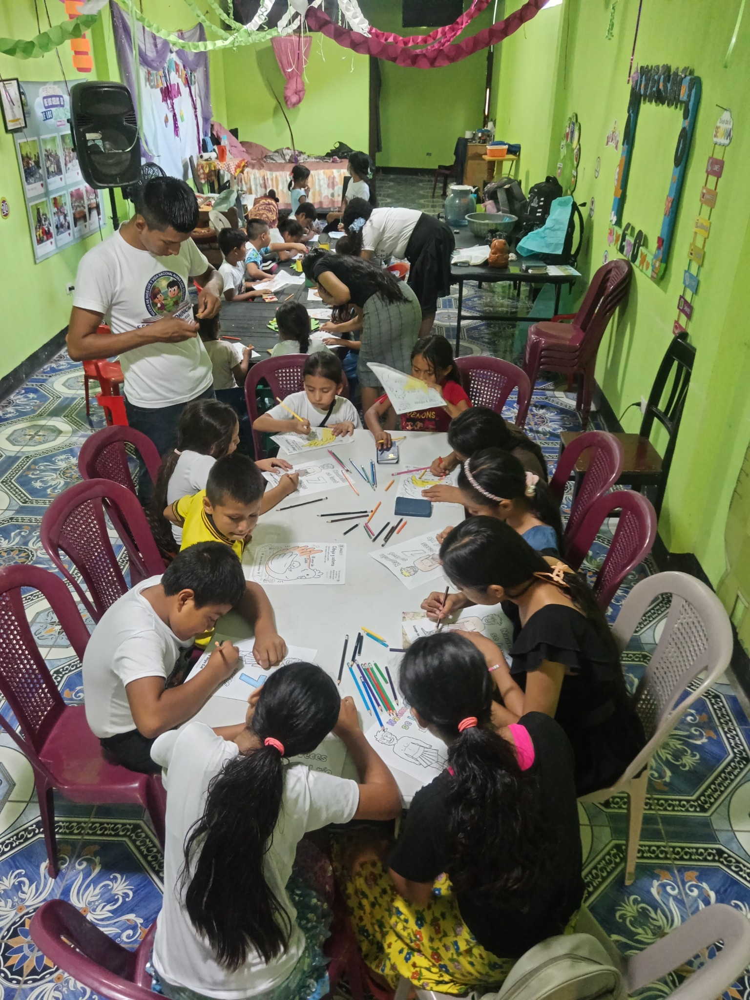
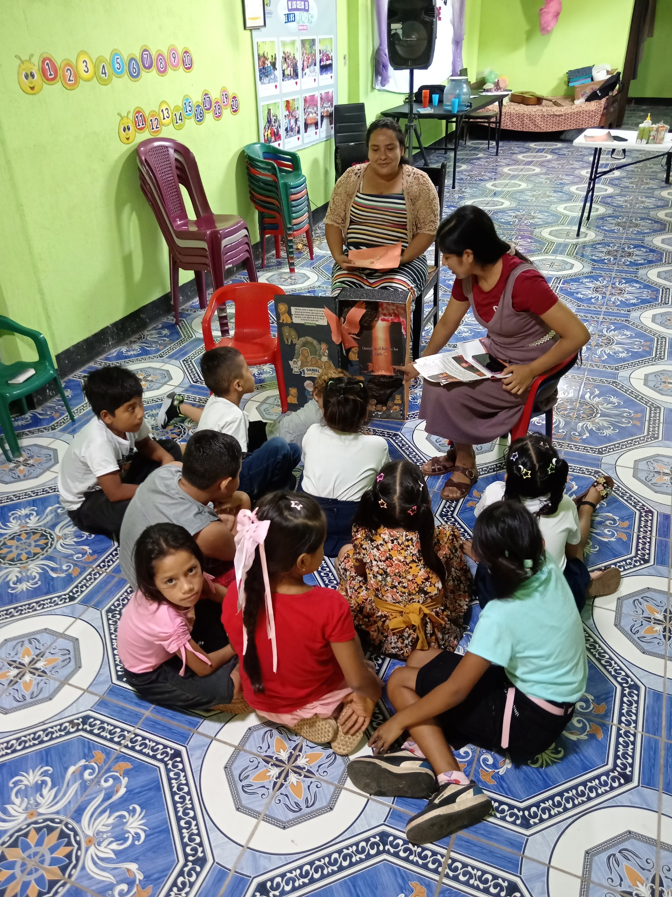
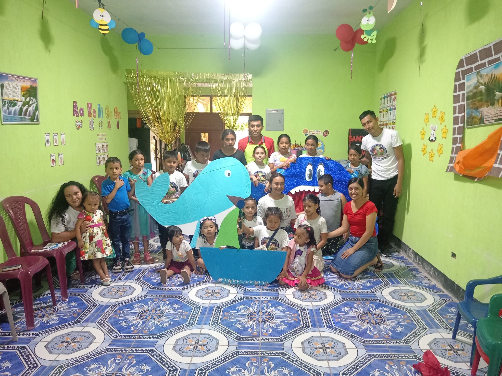
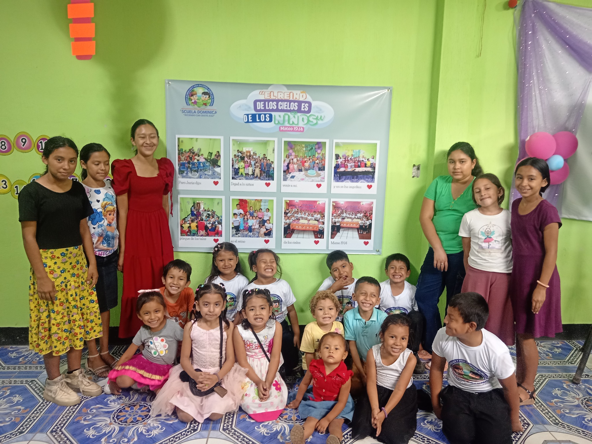

Un lugar donde los niños aprenden de la Palabra de Dios, comparten, juegan y crecen rodeados de cariño.
🎉 Segundo Aniversario 🤝 Quiero apoyarEs un espacio especial dedicado a los niños, donde cada encuentro busca sembrar valores, fe, amor y esperanza por medio de enseñanzas bíblicas y actividades pensadas especialmente para ellos.
Enseñanzas adaptadas para que los niños conozcan y comprendan la Palabra de Dios.
Actividades creativas que ayudan a recordar y poner en práctica lo aprendido.
Momentos alegres para aprender, compartir y fortalecer la convivencia.
Espacios para acercar a los niños a Dios de una manera sencilla y significativa.
Estas fotografías muestran algunos de los momentos que compartimos con nuestros niños, familias y maestros.




Con mucha alegría celebramos nuestro segundo año de compartir, enseñar y sembrar en el corazón de nuestros niños.
💙 Fe💛 Amor💚 Esperanza💜 AlegríaGracias a cada niño, familia, maestro y persona que ha sido parte de esta hermosa experiencia. ¡Seguimos creciendo juntos!
Para continuar realizando nuestras actividades y celebrar este segundo aniversario, invitamos a quienes deseen apoyarnos con un aporte económico.
Cada aporte, grande o pequeño, puede convertirse en una sonrisa para un niño. 💕
Comunícate con nuestro contacto para recibir información sobre cómo realizar tu aporte.
💬 Amilcar · 5301-7971¡Gracias por ayudarnos a seguir sembrando en nuestros niños!